Right-clicking an object opens additional settings. We will focus on Infill and Layers and Perimeters.
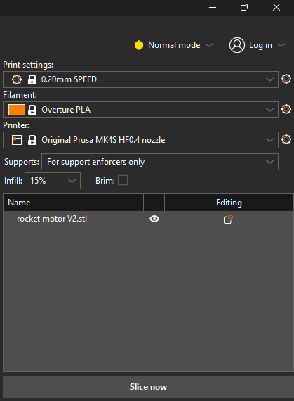
Next we will look at the panel on the right side of the screen, which is the most important part of the program. It contains the fundamental settings used for every print job. When setting up a print, change the settings in the following order.
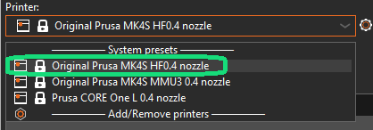
Choose the printer for this job. You should always select the printer first, because it overrides all the other settings. For this training we will focus on the standard MK4S with a 0.4mm nozzle. There are other printers and accessories available but those will require additional training before you are able to use them.
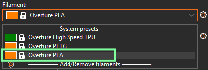
Different materials require different settings (temperature, print speed, etc.), so it’s important to choose the correct one. We have many different colors of Overture PLA available for you to use in the makerspace.
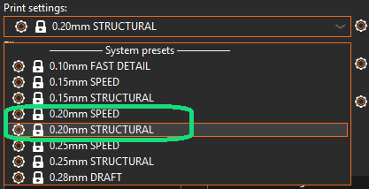
This section allows you to quickly select one of the presets for the given printer and filament. From the dropdown menu, you can choose from various print layer heights. Note that even though these presets are named after the layer height, each of them also includes many other different settings that influence the quality and print time. The lower the layer height, the better the details, but the print process will take significantly longer. The 0.2 mm layer height usually offers a good tradeoff between quality and speed for most projects.
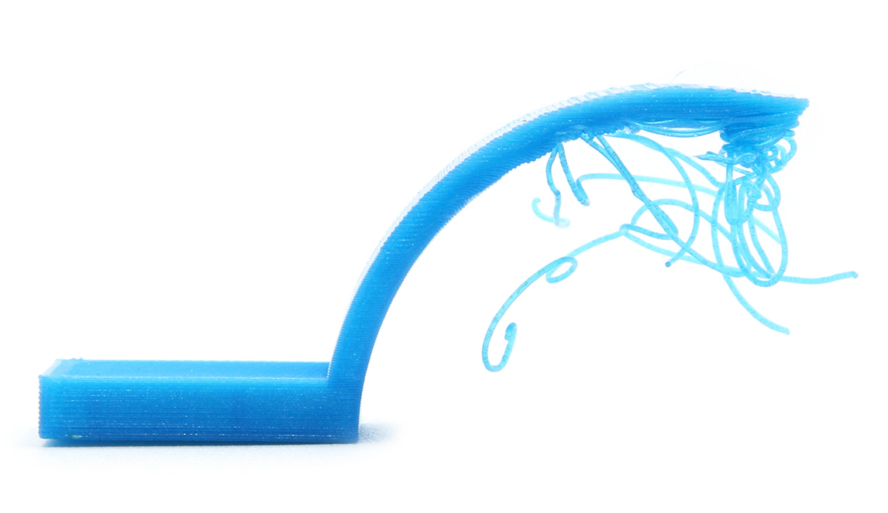
A 3D printer cannot reliably print into thin air. Overhangs may require supports.
The parts of the model that are hanging or protruding “in the air” are called overhangs. Whether these overhangs are printable depends on their size and angle. Roughly speaking, 45° is okay (imagine the arms of the letter “Y”), but 90° (arms of the letter “T”) is not.
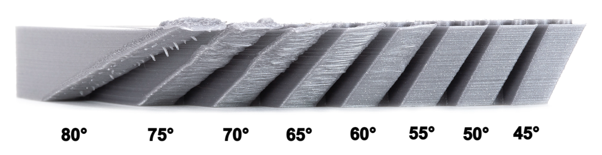
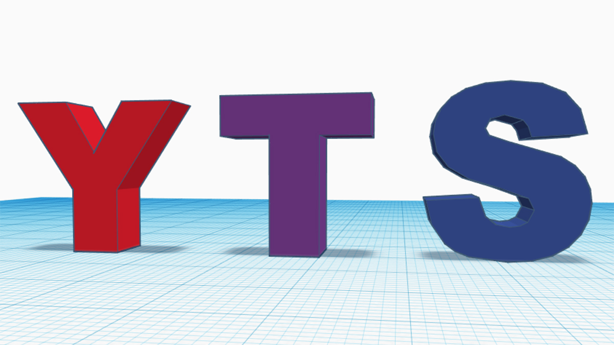
Generating supports, i.e. printed “scaffolding” increases reliability when printing overhangs. It can be difficult for beginners to assess whether supports are needed. When downloading a model from sites like Printables, the model authors usually leave instructions about whether you should enable them or what other printer settings they recommend, so make sure to read the model descriptions!
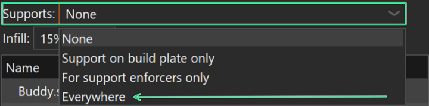
Many times, you can eliminate the need for supports by changing the orientation of the model.
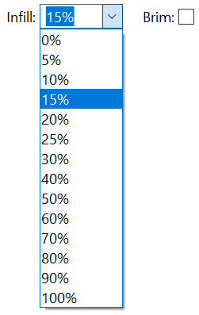
Most prints are hollow with a supporting mesh inside called infill. A value of 15–20% is usually a good balance. Increasing perimeters is often more effective for strength than adding more infill.
Grid is the standard infill pattern used in most preset settings. It is a reliable choice for many prints because it is quick to produce and uses relatively little filament. Grid works well as a default option, especially for nonfunctional parts where strength is not a primary concern.
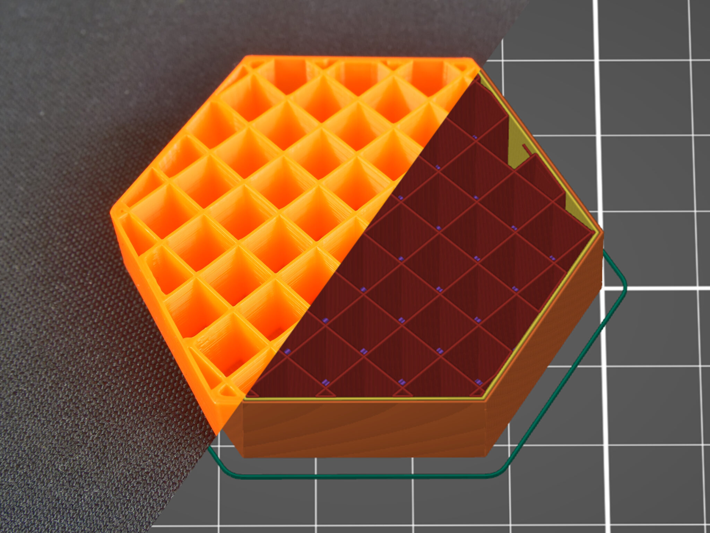
Gyroid is an advanced infill pattern available in PrusaSlicer. It creates a smooth, continuous 3D structure that provides strength in all directions. Compared to simpler patterns, gyroid offers an excellent balance of strength, flexibility, and material use. It also reduces vibration and produces consistent support throughout the part. While it may take slightly longer to print than grid, gyroid is a great choice for functional parts or prints that need more durability and uniform strength.
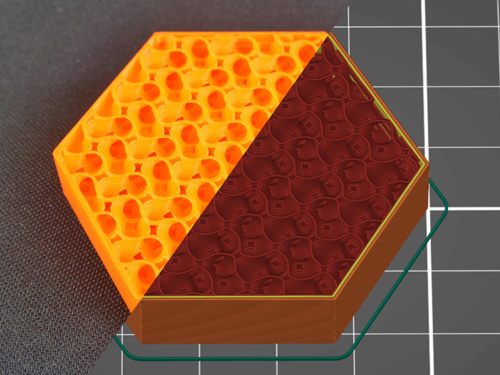
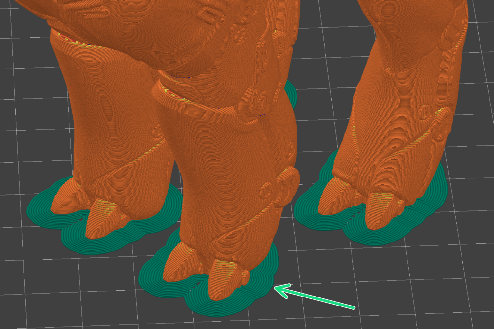
The Brim option adds a thin layer of material that extends outward from the base of your print, creating a larger surface area that sticks to the build plate. This helps improve bed adhesion and reduces the chances of warping or the print coming loose, especially for parts with small footprints or sharp corners. A brim is typically easy to remove after printing and uses only a small amount of extra filament. A brim is typically needed when printing tall or narrow parts, or when working with materials that are more prone to warping.
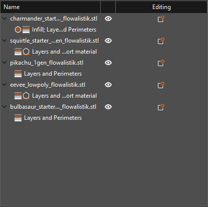
In the Object List panel, you will see all of the models currently placed on the print bed. For simple prints, this list may only contain a single item. For more complex projects, the list can include multiple parts and nested components. Selecting a model, either directly on the print plate or by clicking its name in the Object List, will open a panel below the list with additional controls. This panel allows you to precisely adjust the position, rotation, and scale of your model by entering exact values, rather than relying on dragging the object manually.
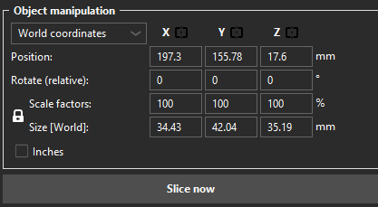
If you make any adjustments to the scale or rotation, you can reverse them by clicking the small circular arrow icon that appears next to the modified values in the Object manipulation panel.
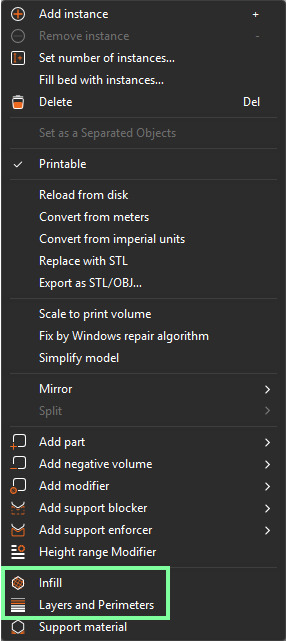
Right-clicking an object opens additional settings. We will focus on Infill and Layers and Perimeters.
For most prints: 15–20% Grid infill is sufficient. Use Gyroid for stronger parts.
A layer height of 0.20 mm works well for most prints.
The Slice button converts the model and selected settings into G-code for the printer.